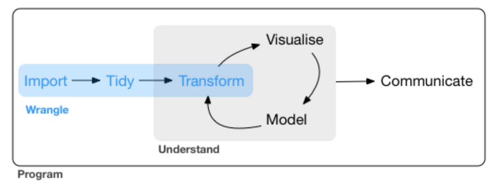

Statistik und Programmierung mit R
4 - Visualisierung in R
Saskia Otto & Christian Möllmann
B-MARSYS 6, SoSe2019
Zur Erinnerung ...
Visualisierung ist eines der Kernpunkte in data science


source: R for Data Science by Wickam & Grolemund, 2017 (licensed under CC-BY-NC-ND 3.0 US)
2 verbreitete Typen
- Basisgrafiken
– Funktionen sind bereits Bestandteil der Basis version
– Gut geeignet für eine einfache und schnelle Datenexploration
- Nicht sehr intuitiv und weniger geeignet für komplexe Grafiken
- Keine gute Hilfe bzw. Dokumentation
- ggplot2
– Besser geeignet bei komplexeren Grafiken
– Klarere Syntax- Besser dokumentiert
- Viele Beispiele im Internet
Basisgrafiken in R
Es gibt 2 verschiedene Arten von Grafikfunktionen:
High-level: erstellt vollständige Grafiken (mit Achsen, Beschriftungen, etc.)
plot(x = iris$Sepal.Length,
y = iris$Sepal.Width)

Low-level: fügt Elemente in den aktuellen Plot
plot(x = iris$Sepal.Length,
y = iris$Sepal.Width)
abline(h = 3, col = 2, lty = 2, lwd = 5)
High-level Grafiken
| Funktion | Beschreibung |
|---|---|
| plot() | Generische Funktion mit vielen Methoden (kontextabhangig) |
| barplot() | Stabdiagram |
| boxplot() | Boxplot |
| contour() | Plot mit Hohenlinien |
| coplot() | Conditioning Plots |
| curve() | Kurven uber einem Intervall fur eine Funktion |
| hist() | Histogramm |
| image() | Erstellt kontextabhäangige Bilder (auch in 3D) |
| mosaicplot() | Mosaikplot fur kategorielle Daten |
| pairs() | Streudiagramm-Matrix fur paarweise Gegeüuberstellungen |
| pie() | Tortendiagramm |
| qqplot() | QQ-Plot |
High-level Grafiken
High-level Grafik (Forts.)
- Können über ihre Argumente modiziert und angepasst werden.
- In den Hilfen
?plotund?plot.defaultwerden viele Argumente von Grafikfunktionen genannt und erklärt. - Es gibt jedoch auch globale Einstellungen füur Grafiken, die alle nachfolgenden Grafiken verändern können:
par(). - Die Hilfe von
?parlistet wesentlich mehr Argumente, die auch in den high-level Funktionen genutzt werden können.
Wichtige grafische Parameter
| Argument | Beschreibung |
|---|---|
| adj | Ausrichtung von Text (zentriert,...) |
| axes | Achsen sollen (nicht) eingezeichnet werden |
| bg | Hintergrundfarbe der Grafik |
| bty | Art der Box um die gezeichnete Grafik |
| cex | Größe der Schriftzeichen in der Grafik |
| col | Farben (der Linien, der Punkte, etc.) |
| las | Ausrichtung der Achsenbeschriftung |
| lty,lwd | Linientype (gestrichelt,...) und Linienbreite |
| main,sub | Überschrift und Unterschrift) |
| mfrow | mehrere Grafiken in einem Bild |
| pch | Darstellung eines Punktes |
| type | Typ der Darstellung (Linien, Punkte, Nichts) |
| xlab,ylab | x-/y-Achsenbeschriftung |
| xlim,ylim | Größe der Grafik in x-/y-Richtung |
Wichtige grafische Parameter (Forts.)

Wichtige Low-Level Grafikfunktionen
| Funktion | Beschreibung |
|---|---|
| abline() | Zeichnet eine kontextabhängige Linie |
| arrows() | Zeichnet Pfeile |
| axis() | Zeichnet Achsen (jede Achse einzeln!) |
| grid() | Zeichnet ein Gitternetz |
| legend() | Erstellt eine Legende im Plot |
| lines() | Zeichnet schrittweise Linien |
| mtext() | Schreibt Text in den Rand (s.unten) |
| points() | Zeichnet Punkte |
| polygon() | Zeichnet ausgefüllte Polygone |
| rect() | Zeichnet (vektorwertig) ein Rechteck |
| segments() | Zeichnet (vektorwertig) Linien |
| text() | Schreibt Text in den Plot |
| title() | Beschriftet den Plot |
Ausgabeformate
Ausgabeformate
plot(1:10)
→ Die Ausgabe erscheint per default auf dem Bildschirm
pdf('Grafik1.pdf') # Device wird gestartet
plot(1:10) # Grafik wird erstellt
points(0.5:9.5, col=1:10, pch=1:10) # Erweiterungen
#... weitere Erweiterungen an der Grafik
dev.off() # Device muss geschlossen werden
Das Schließen mit dev.off() ist besonders wichtig, sonst werden alle folgenden Grafiken mit in dem PDF angespeichert und nicht in der Konsole anzezeigt!
Aufgabe
Quiz: Grafik erstellen und abspeichern
Versuche folgenden Plot mit dem iris Datensatz zu reproduzieren und diesen als PDF abzuspeichern:
Lösung
plot(iris$Sepal.Length, iris$Petal.Length, col = iris$Species,
pch = 11, cex = 2, main = "Art-spefizische Beziehung beider Blattlängen",
ylab = "Länge Bütenblatt", xlab = "Länge Kelchblatt")

Interessiert an mehr Basisgrafiken?
Hier sind ein paar interessante links zur Vertiefung:
Wie fühlst Du Dich?
Total konfus?
Versuche die Quizaufgabe zu lösen und mit dem Lösungsskript zu vergleichen. Die eben vorgestellten Links könnten hilfreich sein oder alternativ kannst Du den swirl-Kurs unseres R-lab 2.0 Projektes machen: https://rlab.blogs.uni-hamburg.de/rlab-kurse/
Total gelangweilt?

Dann versuche mal, 3 Grafiken nebeneinander zu erstellen (Hinweis: die globale par() Funktion wird Dir hier weiterhelfen!).
Absolut zufrieden?
Dann hol Dir einen Kaffee, lehn Dich zurück und genieße den Rest des Tages...!


Diese Arbeit ist lizensiert unter der
Creative Commons Attribution-ShareAlike 4.0 International License
mit Ausnahme externer
Materialien gekennzeichnet durch die source: Angabe.
Bild auf Titel- und Abschlussfolie:
Infrarot-Satellitenbild des Larsen C Schelfeis in der Antarktik
USGS/NASA Landsat:
A Crack of Light in the Polar Dark, Landsat 8 - TIRS, 17.Juni 2017
(unter CC0 Lizenz)